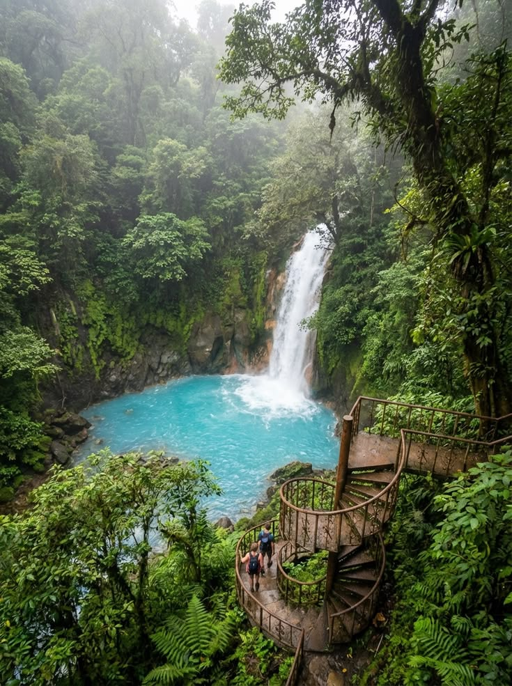
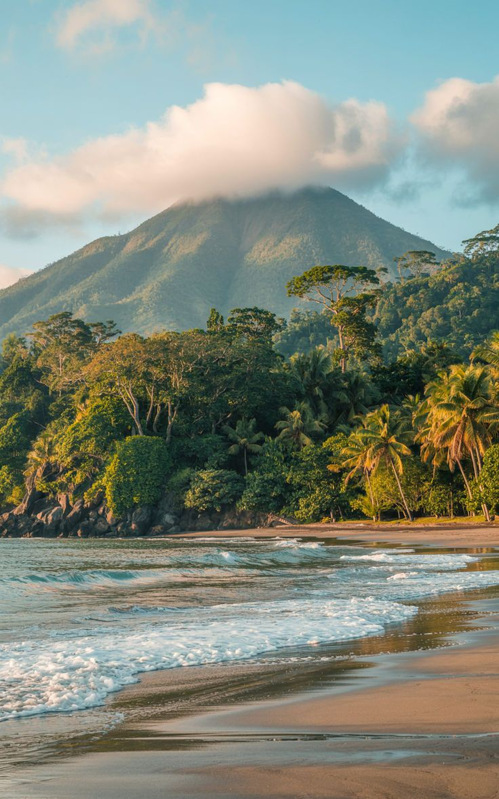
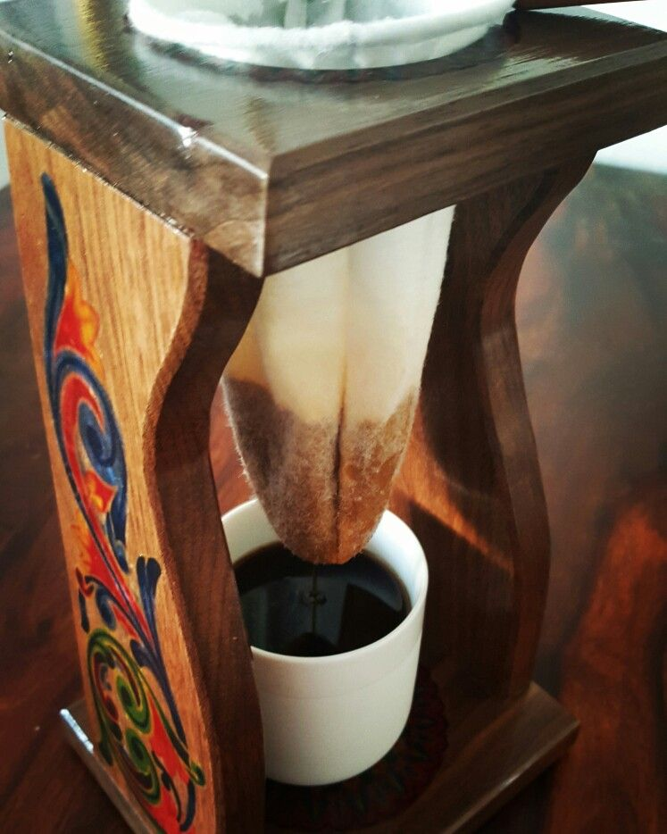
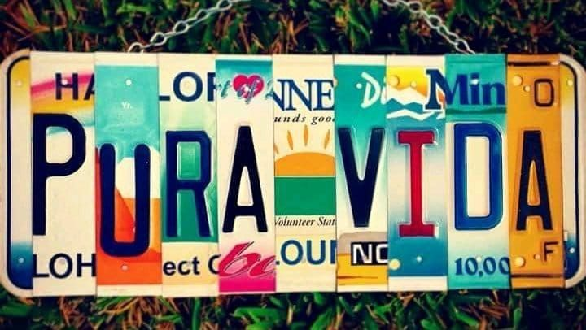
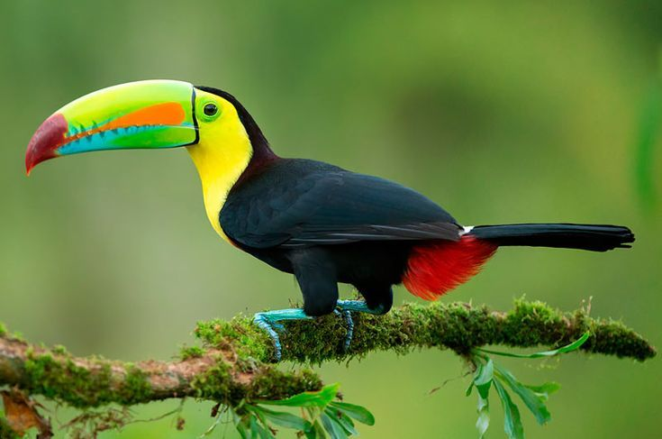
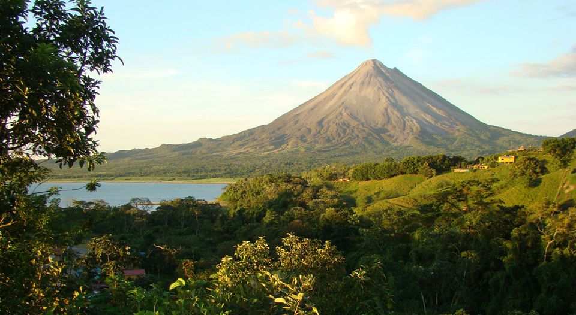
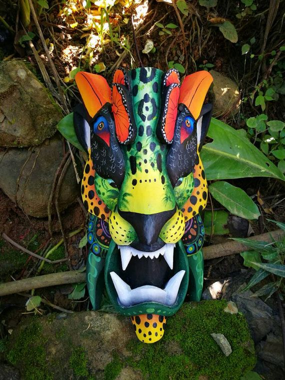
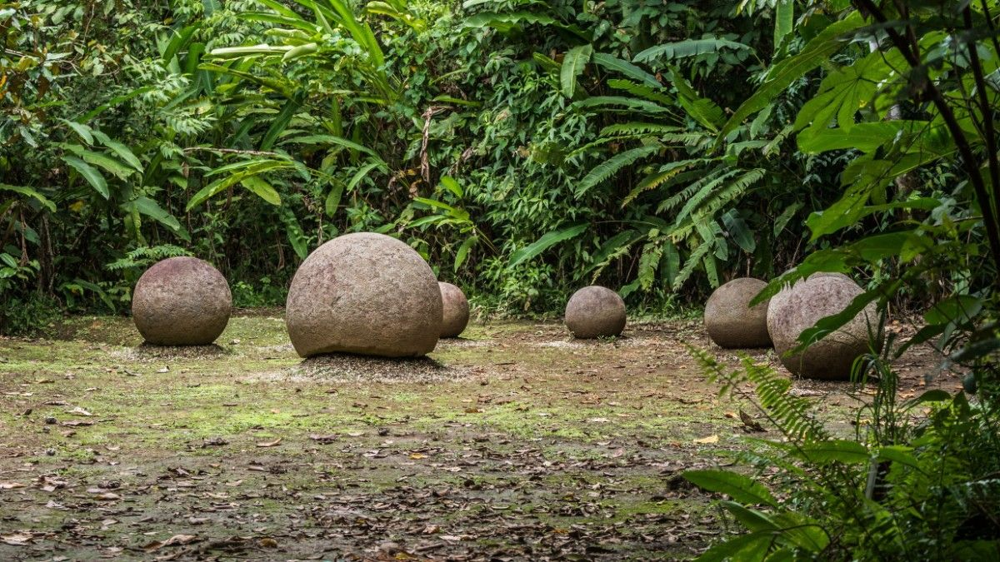

Seja muito bem-vindo ao Pure Coast! Prepare-se para conhecer um país onde vulcões, florestas tropicais, praias paradisíacas e uma cultura vibrante se encontram em perfeita harmonia. Ao longo desta jornada, você vai descobrir curiosidades, tradições, sabores, músicas e paisagens que fazem da Costa Rica um dos destinos mais fascinantes do mundo. Então respire fundo... e viva o verdadeiro espírito Pura Vida!
Explore cada canto da Costa Rica através de páginas dedicadas à sua história, cultura, natureza, gastronomia, música e muito mais. Navegue por galerias de imagens, conheça costumes dos ticos, descubra fatos surpreendentes e teste seus conhecimentos em um quiz interativo. Cada seção foi criada para proporcionar uma experiência envolvente e cheia de descobertas.
Não tenha pressa. Explore cada página, admire cada detalhe e mergulhe em um país onde a natureza impressiona, a cultura encanta e a expressão Pura Vida faz parte do cotidiano. Esperamos que, ao final da visita, você conheça um pouco mais da Costa Rica e leve consigo a vontade de um dia vivenciar tudo isso de perto.

O café do país é reconhecido mundialmente pela qualidade.
A lenda mais famosa da Costa Rica.

A expressão mais famosa da Costa Rica.

Com seu enorme bico colorido, o tucano é uma das aves mais famosas da Costa Rica e um dos símbolos de sua biodiversidade.

O Vulcão Arenal é um dos cartões-postais mais famosos da Costa Rica.

Produzidas artesanalmente, as máscaras Boruca preservam séculos de cultura indígena.

As misteriosas Esferas de Diquís intrigam arqueólogos do mundo inteiro.